Tony Baldé
⚽ My Football (unlucky) History!
"I am not a dreamer. I am a football romantic."
🏃 The Beginning
As far as I remember, I've loved football since I knew my name. My father always watched the games or listen to the commentarys and that was a great influence for me to enjoy it too.
I started playing football very early, at the age of 5, I was already putting the first touches at EPIF, the biggest football academy in Cape Verde.
I have never been the most talented or the fastest neither the strongest, but I have always given everything and the best of me, whether in training or in games. Since that time, I had no other dream than to be a professional footballer. During my adolescence it was difficult to choose the academic areas to pursue in my studies precisely because I had no other mindset. I had to be either a football player or be connected to this sport in one way or another.
In 2011 EPIF participated in a tournament at Sal island where I was selected to be part of the squad, it was during these times that I started to gain more motivation to follow the career of a player. The tournament had a friendly character, but the way I looked at it was very professional. I had the pleasure of playing a tournament alongside my best friend and one of my favorite players, Igor Almeida. I am very proud to have been part of that squad because I felt I was among the best of my age. Also some players from that team have made good progress in their careers as a player:
- Márcio Rosa – Montalegre (Liga 3), International A for the Cape Verde national team
- Yannick Semedo – Salgueiros (Campeonato de Portugal)
- Bruno Amado – Vitória de Guimarães – sub23 (Liga Revelação). Under-19 international by Portugal.
- Evy Pereira - Sporting de Braga (Campeonato Nacional Feminino)
✈️ 🇵🇹
My first experience in football outside Cape Verde was in Portugal in 2015, I did some training with the Vilanovense’s youth team in Vila Nova de Gaia, I wanted to stay there and the coach too, my father spoke to a friend of his, agent and ex-player, Bobo Djaló, but he wasn't interested in taking on the role as my manager and it didn't happen.
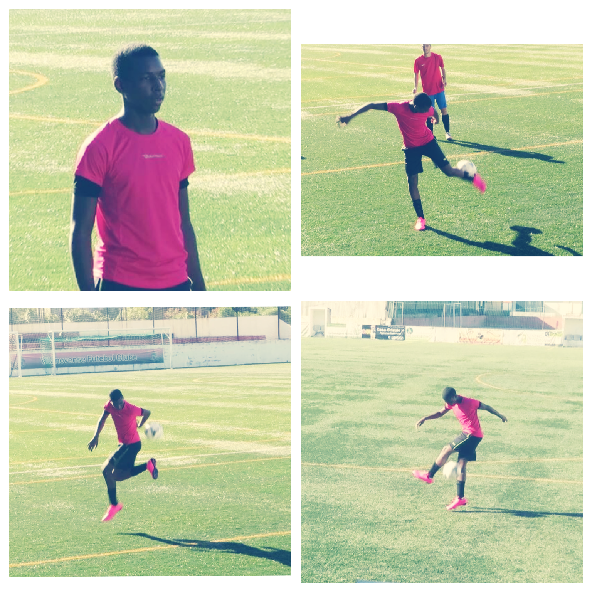 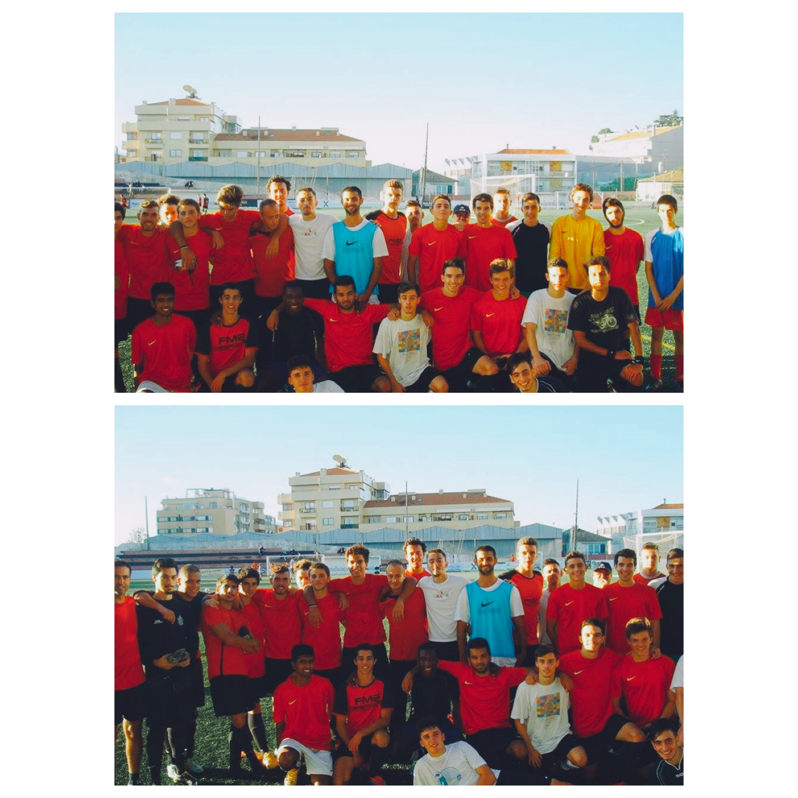In September 2016 I arrived in Covilhã to study, but I wanted to play. I did the pre-season with the Youth team; however, I was not registered because the board did not believe that I had not played professionally in Cape Verde, they wanted me to present an international transfer letter, which costs 1000 euros. I really wanted to play, but I didn't like the way they acted with me, they could say that I don't have enough quality, or that the squad was full or some other excuse, but the fact that they lied to me made me very sad. They told me that they went to search the Cape Verdean Football Federation's database and that I would appear there, I could confront them and ask which team or even that they show me, but I left it aside. Though, I didn't stop going training, I liked the coach Leandro Monteiro (now Vilafranquense's Physical Trainer), and I also made some friends that I still appreciate a lot, especially Daniel Feliciano who became a brother.
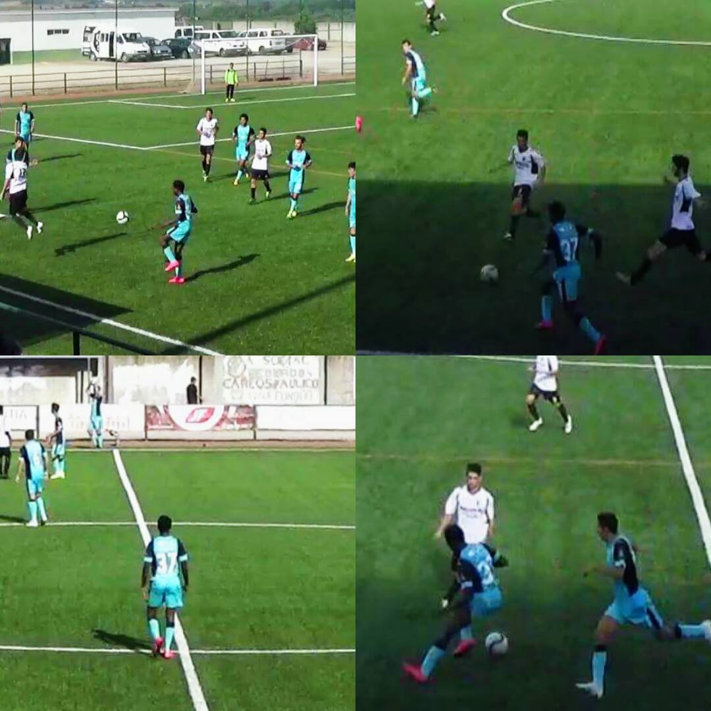 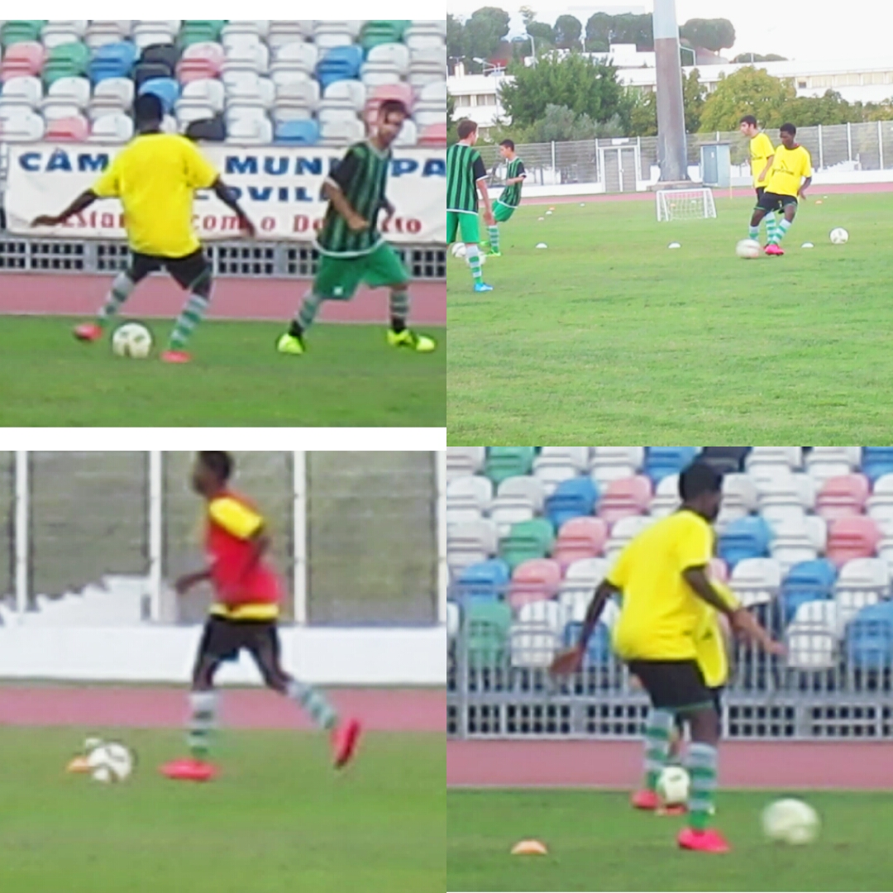 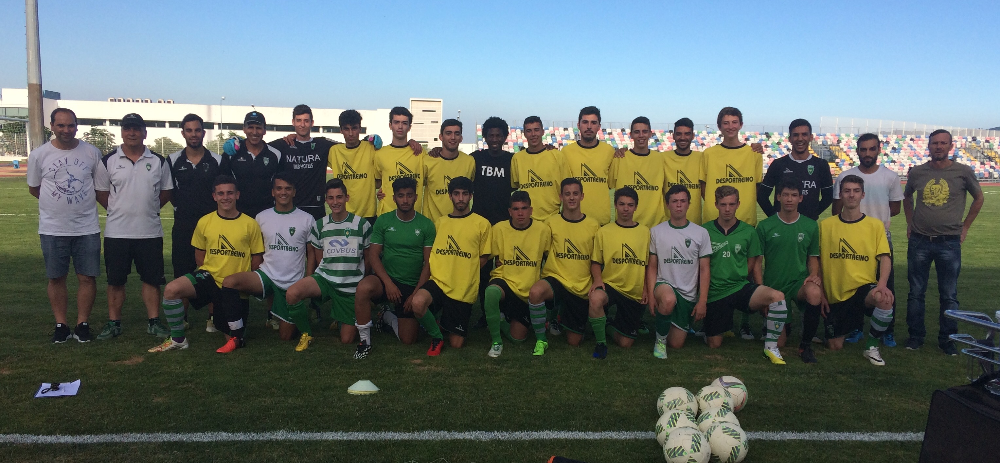In December of that same year a friend of my father got in touch with me saying that he could help me to do some trials in a team from the District of Porto, Coimbrões. I arrived there to train and the coach, José Bizarro, said he doesn't need players in my position. He didn't even gave me an opportunity to show my quality.
“Football is like life. It requires perseverance, self-denial, hard work, sacrifice, dedication, and respect for authority.”
📍🇵🇹
In August 2017, after a game between friends in a park in Lumiar, a man approached me and asked me which team I played for, he was surprised when I said he didn't have a club, he asked me for my phone number and the next day we went to Sacavenense to a trainning session. When we got there, the coach said it wasn't worth training because there were too many players.
The following week I went with a friend to GC Carcavelos to do caption training, the answer was the same.
CCD EZ - Boidobra
I continued trainning with Covilhã's youth team until September 2018, when the former Sporting da Covilhã’s kids coach, Maradona, was put in charge as the coach of CCD Estrela do Zêzere senior team, which would be year zero for them. And as I already knew him, I did 2 training sessions, I was enrolled and signed my first amateur contract. The sensation was indescribable.The team was extremely weak, only 4 or 5 had professional ambitions but still lack on the quality, but I didn't give up, I always gave my best and I am eternally grateful for them being responsible for my registration in the Portuguese Football Federation. Mister Jorge Pereira, or Maradona as he is known, was always very attentive, with great human resource management skills, the club did not pay a single euro, but we did not give up, he worked with the few resources he had and will be forever a great friend and tutor.
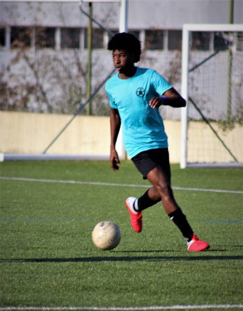Left Ankle Curse 🦶
In February I had a sprain on the left ankle that meant that I ended up injured for the rest of the season, at that moment I had the idea that it was very serious, but the coach didn't let me down, he supported me until I recovered. However I continued with some sequels due to this injury. At the time I had some options to choose where to play, proposal of teams from the District of Guarda and Castelo Branco made me feel good, knowing that there were people interested in my talent, after analyzing the proposals, I accepted the one from SC Celoricense, which is 1 hour far from Covilhã, but we were traveling in a van, which did twice as long.
SC Celoricense
It was a very good experience, I met many talented players, the league was more competitive than the one in Castelo Branco, and clearly the team was superior to Boidobra. I felt at home in a short amount of time and adapting was easy.
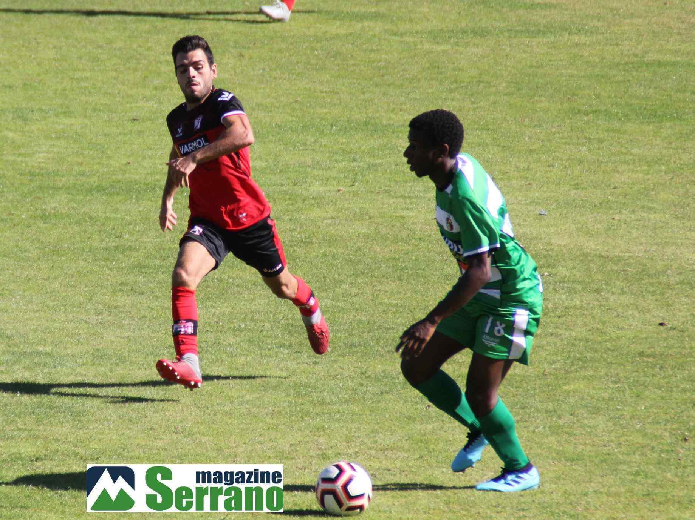 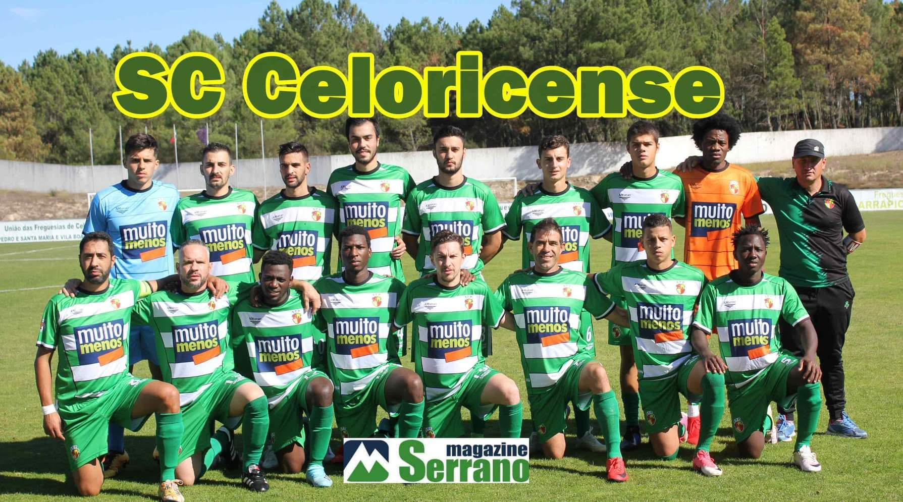
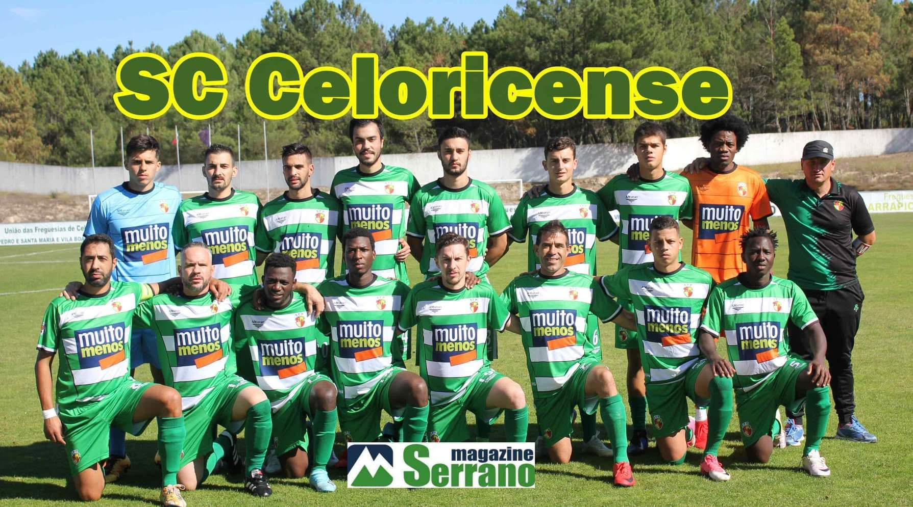
In January, in a derby against Vila Cortez, I suffered a hard tackle that sprained my left ankle in a serious way, at the time I thought it was the end, I couldn't see myself recovering from that injury, the worst thing was that nobody said otherwise, anyone who saw my situation had the same thought as me. I did some physiotherapy sessions, I wore crutches for a month, and without them I limped for 3 months, had a lot of difficulties climbing the stairs, just couldn't see myself playing again.
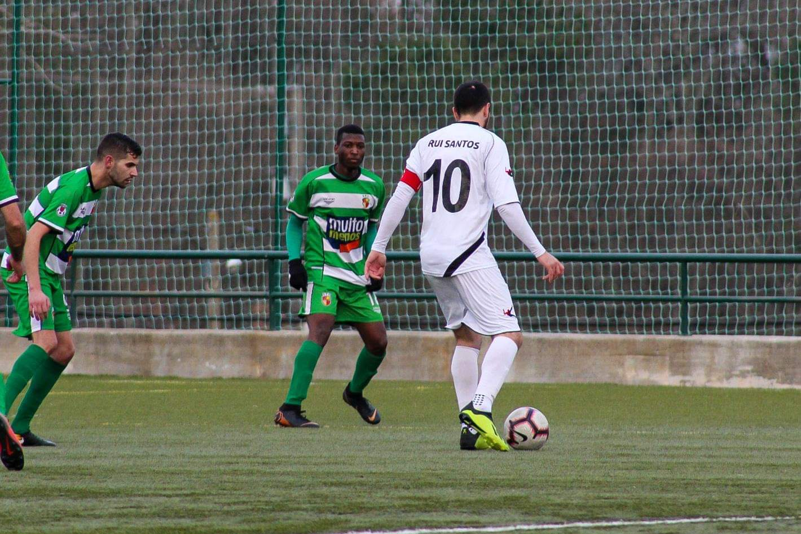 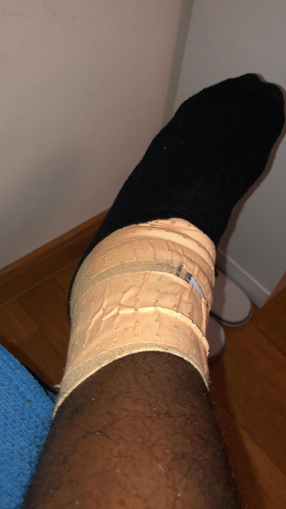 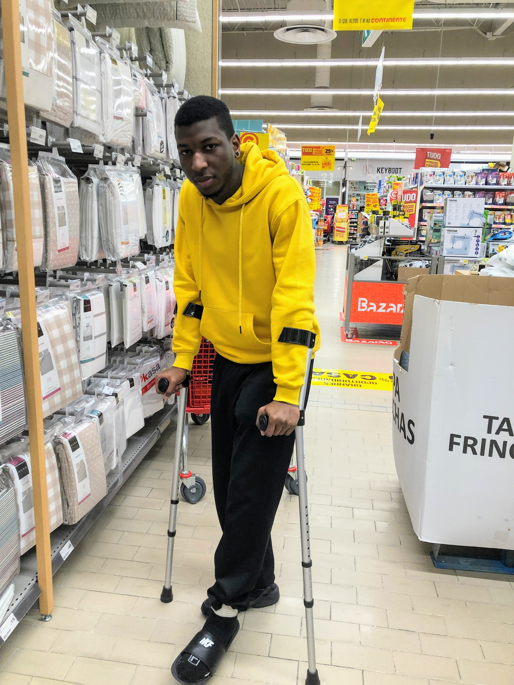To make matters worse, I was diagnosed with an instability in my left knee due to that ankle injury. after partially recovering my ankle, I started to feel some problems in my left knee, it started to get inflamed suddenly, shivering, I couldn't squat down or climb the stairs without feeling pain. In those days I couldn't think about anything other than my 5–6-year-old self who imagined that at this age I would be playing at a high level. It felt like the dreams I had were falling apart every day.
Some people think football is a matter of life and death. I assure you, it's much more serious than that.
AD Quarteirense 1937
In November of the same year (after Covid-19's break) I had an offer to play in at Algarve for the AD Quarteirense team, the league is more competitive than Guarda and had more conditions, I knew I wasn't in conditions to go play so I hesitated a bit. My mother was against that decision, and that was not helping me. On the first day of training, I spoke with Mister João Pinto, I told him I wasn't 100% fit and he told me not to worry that the club would help me recover.
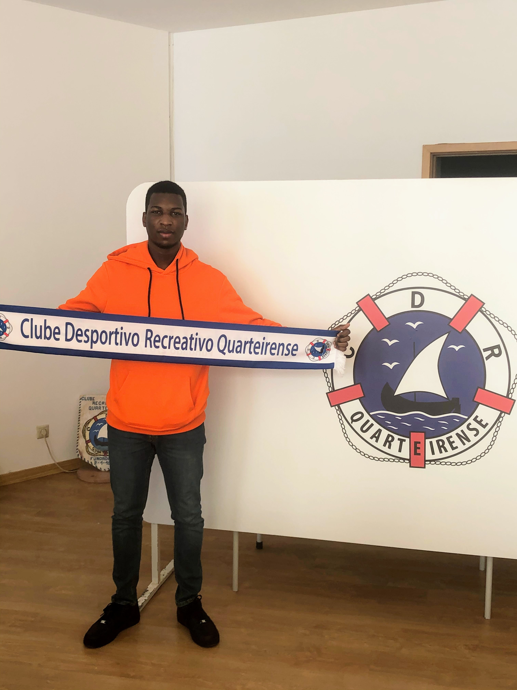I started to do physiotherapy and the therapist said I had to stop for at least a month, I didn't want to and neither did the coach, so on the first match-day, I played the 90 minutes, but to me it felt like 180. I couldn't stand it, but I didn't give up, the pains were so much that I wasn't even feeling tired, I just felt pain. Then I noticed that I could no longer do long passes or shots very effectively, my pace dropped considerably, I had difficulty accelerating and my performance dropped. Physically I was bad and psychologically worse, I didn't had much hope of getting back to my best shape. Until the coach of the under-23 team, Márcio Sarmento, asked João Pinto to let me train with the youth team, in order to gain game rhythm, in those days Mister Sarmento was my only motivation. I always asked if it was worth it to continue taking risks as the situation was not moving towards the positive.
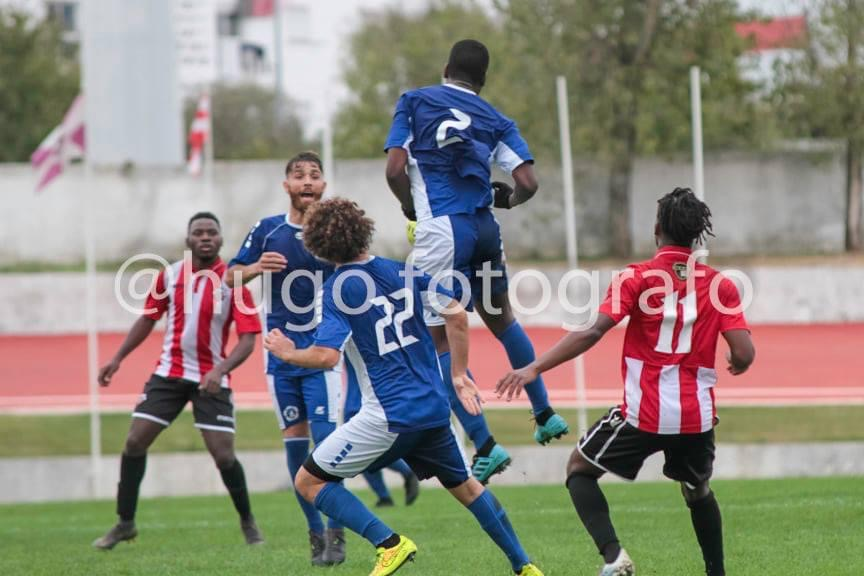After having played a few games (injured) both for the main team and for the under-23, I felt a muscle overload and a hamstring injury all of tem due to the ankle injury. I decided to stop there, I couldn't do it anymore and didn't know what to do. Quarteirense was very patient with me, even without playing they continued to fulfill their duties until the month of January when they ended the season because of Covid issues.
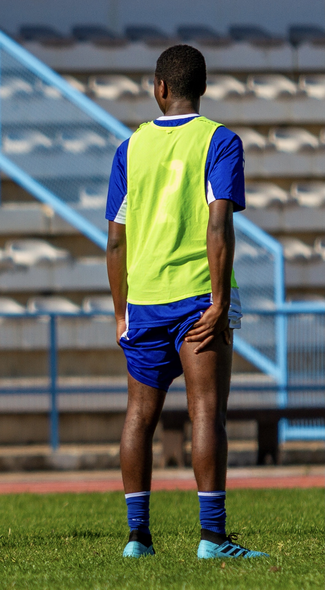Recovering 💪
During the months of March to June I spent a lot of money on physiotherapy sessions only to find out that I would only fully recover with an operation, an option that I discarded right away.
In June I went to a tournament in Vallecas in Spain organized by the F5 Sport Arena where I was part of the African National Team in Portugal, it was an incredible feeling “to be back”, we played a game against Gouveia that was going to dispute the Campeonato de Portugal, we won, I had a good performance, both in Spain and Portugal, I gained a lot of spirit and decided that I would do everything possible to regain my best shape, changing eating habits, routines during the day, training at home, etc.
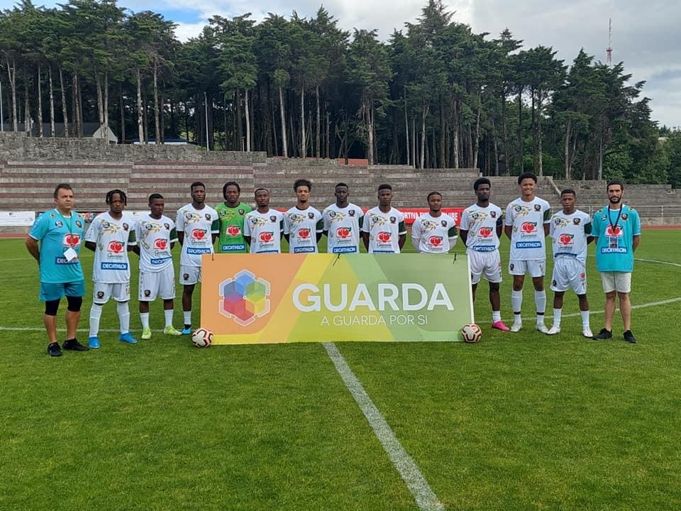 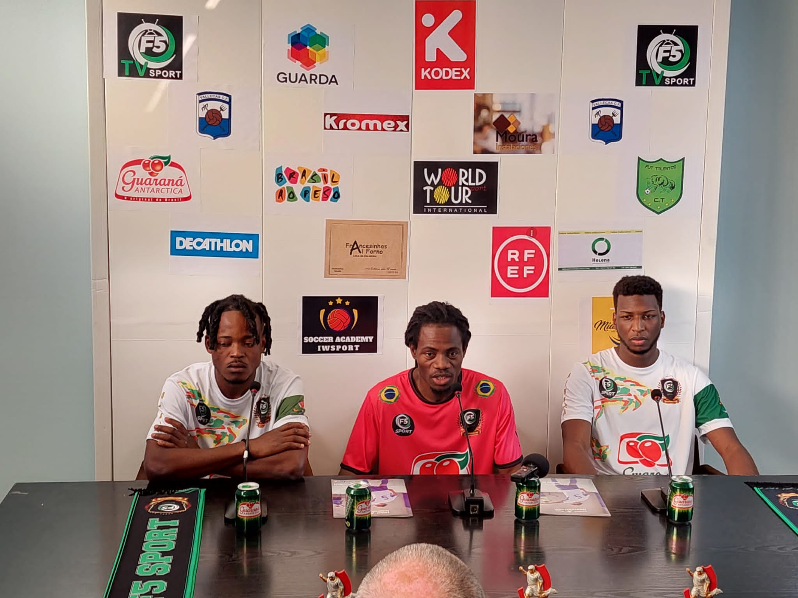I applied for the Erasmus+ Program and got a place in Poland on the PWSIiP for the 2021/2022 school year, the first thing I did when I arrived was to look for football teams in the city, found LKS Łomża from the III League and sent a message to the coach, who was very nice and told me I could go train.
On the first day of training, the President was present and spoke to me about the documentation, saying that the team could not register me if I was not a European citizen.
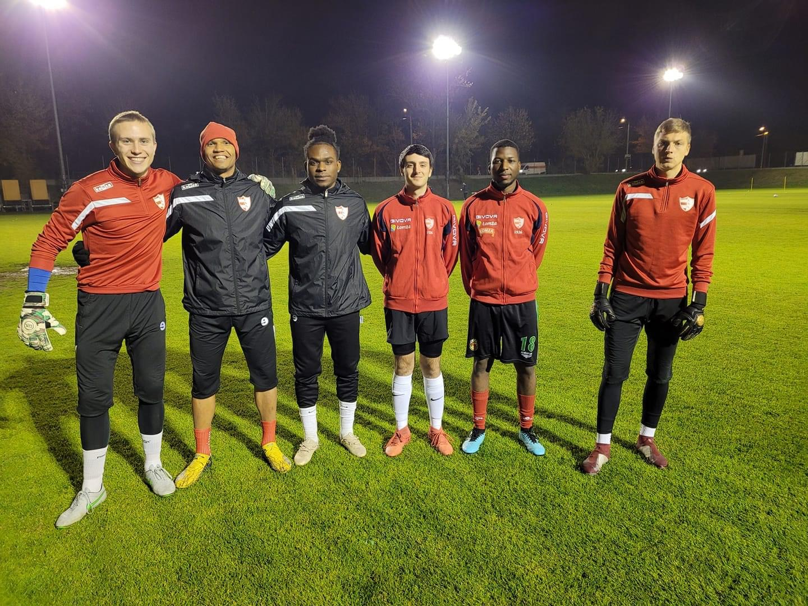
GetInFut 📝
I had searched the internet for football agencies in Poland to see if I could get any clubs during my stay. The only one that answered me was GetInFut, the agent António Rosário showed great availability to help me and soon gained my trust.Footbal is unconditional love.